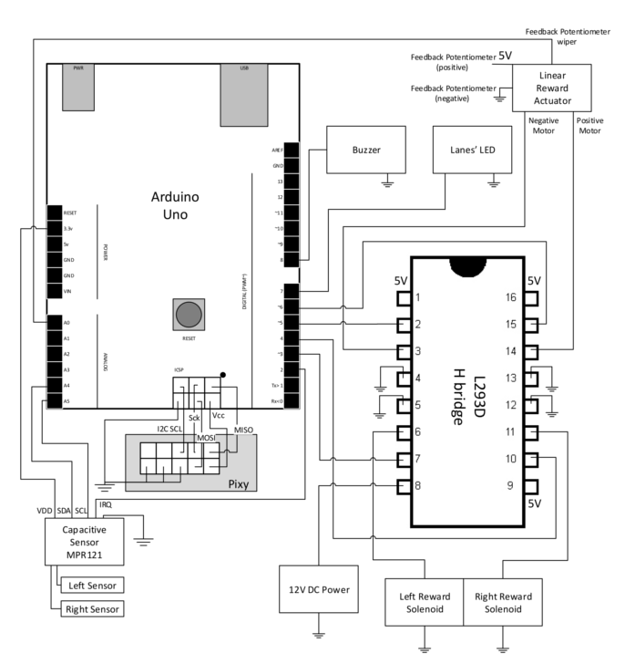
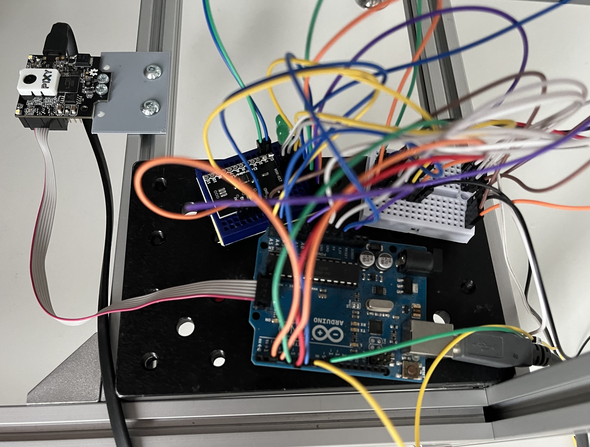
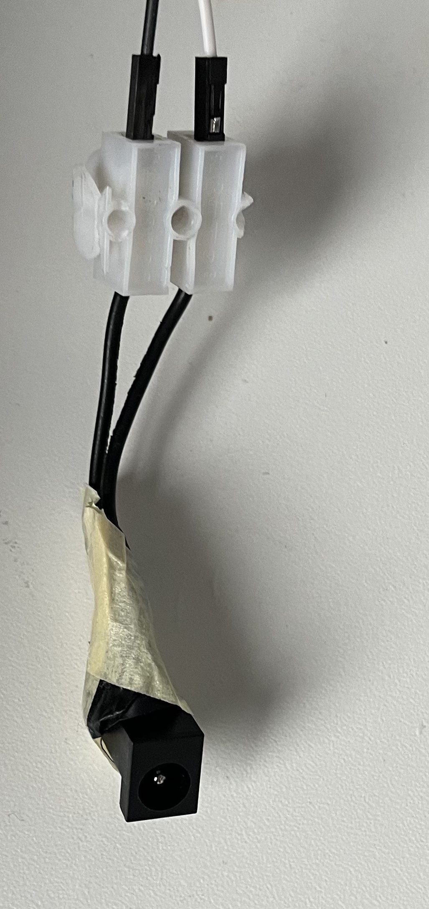

Set up of the electric system
Parts
- 1 Active Buzzer
- many cable ties
- 1 capacitive sensor MPR121
- some circuit board
- 1 H bridge L293D
- many jumper wires
Tools
Wiring of devices
-
In order to connect the devices you need a circuit board, e.g. this circuit board.
-
Further you need many jumper wires jumper wires to set up connections accordingly to the following circuit drawing. You need male, female and ordinary wires.
-
To clean up the pathing of cables you can use cable ties like, e.g. these cable ties and fixate with that the cables at the aluminium strut profile.
-
You can use a large breadboard to keep a structure between the Arduino Uno, capacitive sensor MPR121, Active Buzzer and H bridge L293D.
Wiring configuration

Circuit boards with wiring configuration

Component informations:
H bridge L293D:
- Each connection showing 5V must be connected with a 5V power supply. The Arduino Uno has a 5V power supply.
Linear actuator:
-
Orange cable – Feedback Potentiometer negative reference rail
-
Purple cable – Feedback Potentiometer wiper
-
Red cable – Motor V+ (6V or 12V)
-
Black cable – Motor V- (Ground)
-
Yellow cable – Feedback Potentiometer positive reference rail
PixyCam2
- You should use the SPI cable to connect the PixyCam2 with the Arduino.
- It should be included in the delivery
12V Power supply
We used an DIY approach to connect a 12V power supply. It is shown in the picture below:

The black ending was removed from another electronic device with a 12V power supply. By this we can connect the power supply with the circuit board via cable.
Capacitive sensor MPR121
The left and right sensor in the circuit diagram is meant to be a electrically conductive wire which is attached to each needle.
-
The wire needs to be wrapped around the needle multiple times
- For small changes in the placement of the wire the threshold of the Mpr121 needs to be adjusted.
-
The connections at the MPR121 must be soldered. Therefore you need a small soldering station.
Not required parts of wiring configuration
The buzzer and LED in the wiring configuration are components of the first use case and may not be required for your set up. Because the provided code is also from the first use case, both components still get mentioned here.